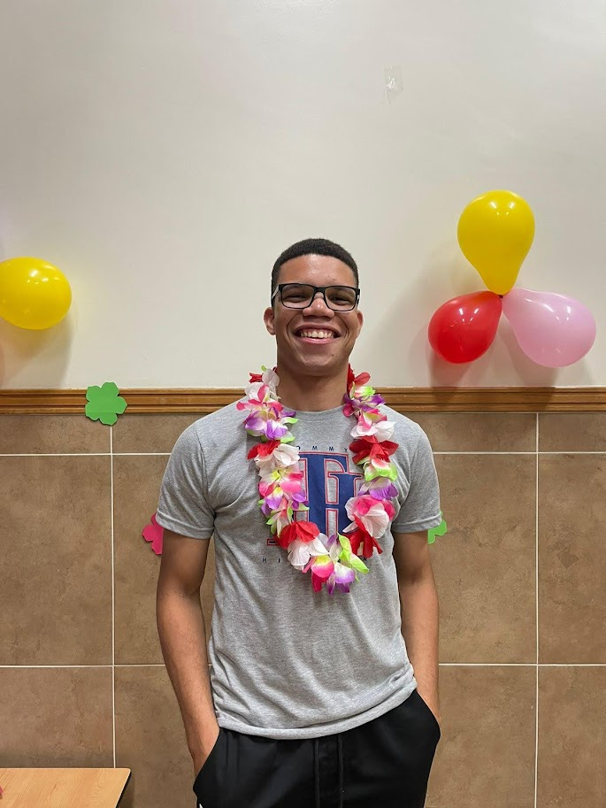

Emanuel Jonatas Batista de Oliveira | DWD 130
Hello my name is Emanuel, I am from São Paulo, Brazil. I lovewatch action movies. My favorite food is the brazilian barbecue. I served as a missionary in Brazil Cuiabá Mission. I have a big family, always that I can I like to spend time with them. Our favorite hobby is cook in familyn the last time we cooked Mexican Food with a lemon juice.
I love learn about technology. One day I want develop websites and software without fear. I have some hability with computers now but I know that I can achieve a high level, my big problem is the english language, I learn quickly but learn other language is a little challenger. I want develop some personal projects like a Area Book for missionarys. My objective with this app is help the persons organize your schedule and goals. I love technology this resource is present in all my days, I will develop resources to facilitate the life.
I'm excited to learn more programming languages and develop new skills with computer.